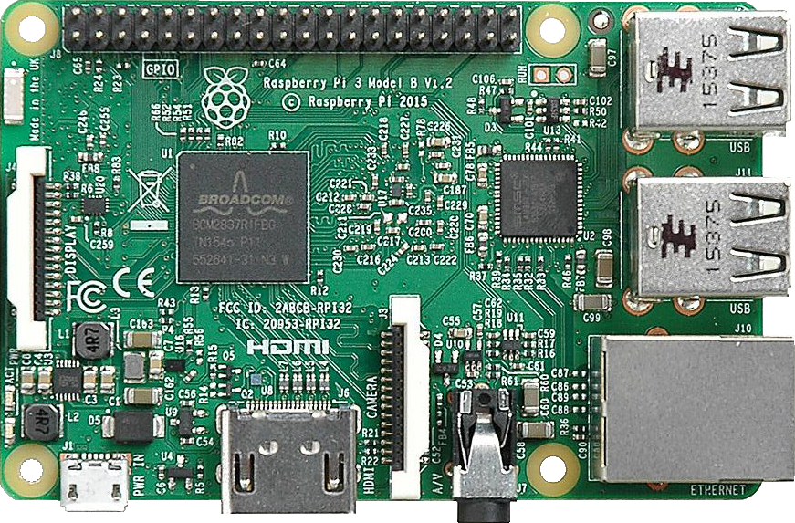
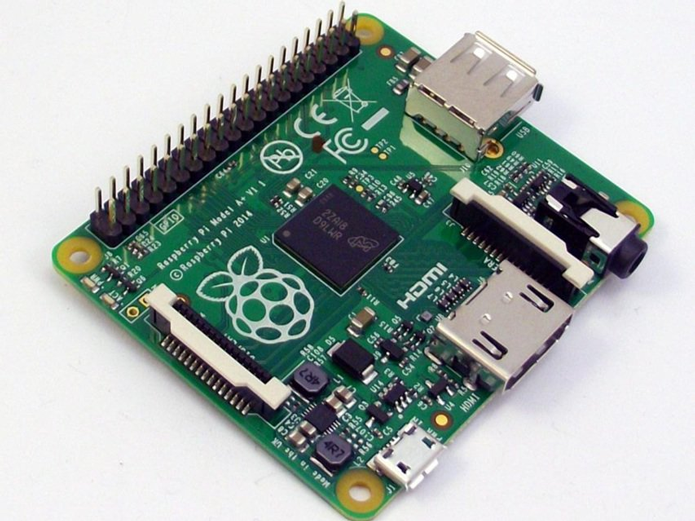
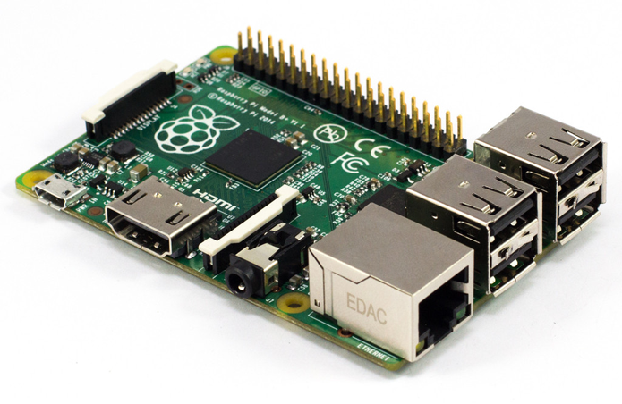
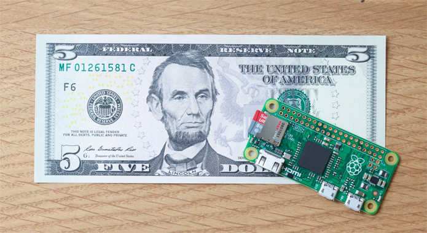
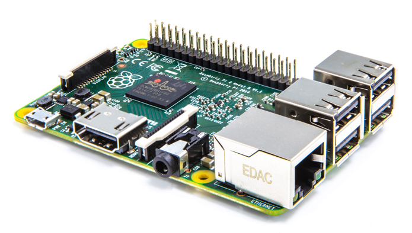

A Fundação Raspberry Pi é uma organização sem fins lucrativos que nasceu com o objetivo de ensinar informática e programação para crianças. Para isso, desenvolveu, na Inglaterra, o Raspberry Pi, um mini-computador, de baixo custo e tamanho semelhante ao de um cartão e crédito, capaz de viabilizar projetos. O que o torna tão barato é sua arquitetura: possui portas de comunicação (GPIO, USB, Ethernet, Wi-Fi e Bluetooth), processador, memória, saída de vídeo HDMI e uma interface leitora de cartão de memória. O princípio foi justamente desenvolvido para que crianças pudessem com facilidade testar seus projetos e recomeçar. Além de contar com um software que ensina programação à iniciantes. A simplicidade, versatilidade e, claro, baixo custo formaram a fórmula imediata para o sucesso. Somado a isso, o fato de encontrar tudo que esteja relacionado ao Raspberry Pi no site da Fundação e a disponibilidade do código aberto, amplia ainda mais o interesse, ao passo que multiplica as possibilidades. Os primeiros modelos, Raspberry A e Raspberry B, foram comercializados, respectivamente, por U$ 25 o modelo A e U$ 35. Atualmente, o mais recente modelo, Raspberry Pi Zero WH, tem 6,5 cm de largura por 3 cm de profundidade, vem com Wi-Fi embutido, Bluetooth e pinos GPIO e custa ainda menos do que os modelos anteriores: US$ 18. Segundo os próprios fundadores, o grande propósito da inovadora marca vem se cumprindo nestes últimos seis anos: fornecer a todos, em todos os lugares, a oportunidade de ter um computador com funções gerais por um preço bastante acessível. Estão dando às pessoas e empresas o acesso a novas habilidades, possibilitando criar novos negócios e tirar ideias do papel. E, principalmente, estão possibilitando a inclusão digital com cada centavo de lucro obtido com os produtos, que é repassado para a Fundação Raspberry Pi. O MODBOX é prova do cumprimento dessa missão e estamos muito felizes em fazer parte contribuindo com esta história. Vida longo à Fundação Raspberry Pi
Pode se conectar a um monitor de computador ou TV, e usa um teclado e um mouse padrão, desenvolvido no Reino Unido pela Fundação Raspberry Pi. Todo o hardware é integrado numa única placa. O produto é bastante utilizado em projetos de casas inteligentes e os IOT - Internet das Coisas, marcando e melhorando o nivel de empregabilidade, por tecnologias que nos permitem adentrar na era dos exabytes, da revolucao digital, ad-hoc, promovendo procedimentos únicos, específicos, Inovação tecnológica, que é uma saída resiliente aos entraves sociais, tendo muito mais dados sobre a vida a partir desta fase de nuvens e Big Data, os negócios e as atividades finas, core business, e portanto, com conceitos de qualidade total, competitividade em maior escala, primeiro mundo de um modo mais abrangente, tudo neste fino e poderoso hardware a todas as idades também
Aqui abaixo temos fotos dos modelos dos Raspberry.
Raspberry Pi 1 Model A+
Raspberry Pi 1 Model B+
Raspberry Pi Zero
Raspberry Pi 2 Model B
 Ryan, Jônatas e Almir